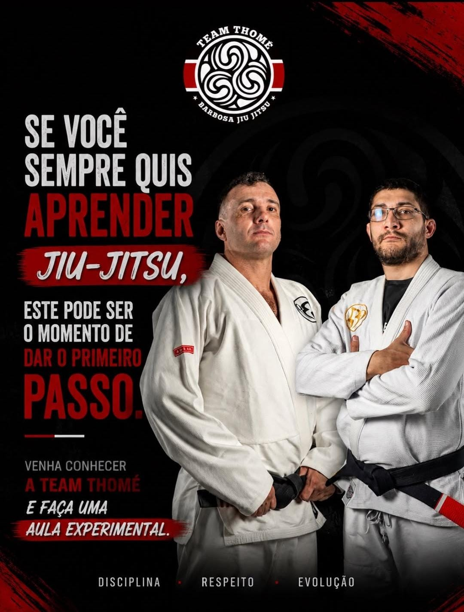

Iniciantes
Aula aberta a todos os níveis, inclusive para quem nunca treinou jiu-jítsu. Uma oportunidade para começar a conhecer a modalidade.
Aulas e horários
Conheça as turmas e confira os horários e professores responsáveis por cada aula. Temos opções para crianças, adultos e diferentes momentos da sua jornada no jiu-jítsu.
Ver a programação
Aula aberta a todos os níveis, inclusive para quem nunca treinou jiu-jítsu. Uma oportunidade para começar a conhecer a modalidade.
Aula dedicada à base do jiu-jítsu: posições, movimentações e técnicas essenciais. Aberta a todos os níveis, tanto para quem está começando quanto para quem deseja reforçar sua base técnica.
Aula para adultos iniciantes e graduados, aberta a todos os níveis, com aprendizado e aperfeiçoamento das técnicas de jiu-jítsu.
Treino para aprofundar as técnicas do jiu-jítsu. Consulte a equipe sobre os critérios de participação.
Turma Avançado de jiu-jítsu. Consulte a equipe sobre a proposta do treino e os critérios de participação.
Treino de jiu-jítsu sem kimono e sem divisão por nível.
A academia não empresta uniforme para essa modalidade. Traga sua própria roupa de treino e consulte a equipe sobre a roupa adequada.
Kids 01: 3 a 6 anos.
Kids 02: 6 a 10 anos.
Kids 03: 10 a 14 anos.
Em caso de dúvida sobre a turma indicada, especialmente nas idades de transição, consulte a equipe.
Nosso espaço atual possui um tatame. Nas aulas simultâneas de Kids 02 e Kids 03, às segundas e quartas-feiras, o espaço é dividido ao meio, com um professor responsável por cada turma.
Sexta-feira: aula Kids unificada às 19:00. Kids 01, Kids 02 e Kids 03 participam juntos de uma aula dedicada aos rolas. Para a primeira participação da criança, consulte a equipe sobre as orientações.
Veja a semana completa ou selecione um dia. Os horários indicam o início das aulas.
Para esclarecer os critérios de participação nas turmas Intermediário e Avançado, a primeira participação no Kids de sexta-feira ou a escolha da turma infantil, consulte a equipe pelo WhatsApp: (11) 93029-0784 .
Aula experimental gratuita
A aula experimental é gratuita e, geralmente, não precisa de agendamento. Confira as orientações e escolha uma turma para participar.
Nas aulas com kimono, você pode trazer o próprio ou usar um kimono experimental, entregue na chegada. Para No Gi, traga sua própria roupa de treino: não há empréstimo de uniforme.
Conhecer a aula experimentalO formulário da aula experimental apenas prepara uma mensagem para você enviar pelo WhatsApp. Ele não faz uma reserva nem confirma agendamento.